PT Sinergi Gula Nusantara
Mengenal lebih dekat profil, sejarah, dan perkembangan unit operasional PT Sinergi Gula Nusantara dalam memajukan industri gula nasional.
Pabrik Kami
Pabrik gula kami tersebar ke 36 provinsi di Indonesia diantaranya
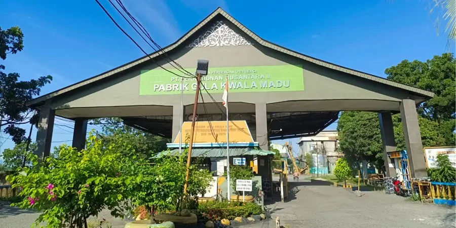
Pabrik Gula Kwala Madu
Pabrik Gula Kwala Madu adalah pabrik gula di Langkat, Sumatera Utara, yang dibangun oleh Hitachi Zosen dan beroperasi sejak 1984 di bawah pengelolaan PTPN II.
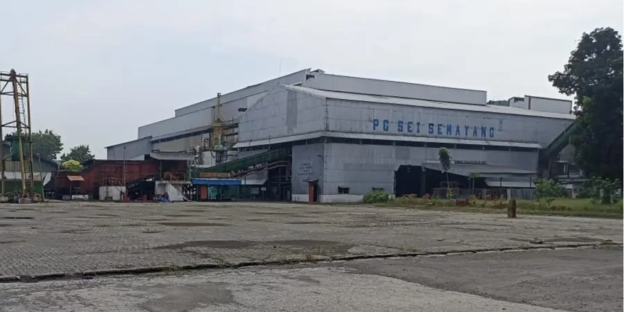
Pabrik Gula Sei Semayang
Pabrik Gula Sei Semayang adalah pabrik gula di Deli Serdang, Sumatera Utara, yang diresmikan Presiden Soeharto pada 1983 dan aktif kembali menggiling sejak 2020 setelah sempat vakum.
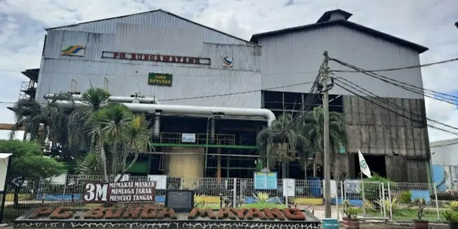
Pabrik Gula Bunga Mayang
Pabrik Gula Bungamayang adalah pabrik gula di Lampung Utara yang dibangun oleh Kawasaki Heavy Industries, beroperasi sejak 1984, dan kini dikelola PT Sinergi Gula Nusantara dengan kapasitas yang telah ditingkatkan menjadi 7.000 TCD.

Pabrik Gula Cinta Manis
Pabrik Gula Cinta Manis adalah pabrik gula di Ogan Ilir, Sumatera Selatan, yang dibangun oleh Marubeni Corp, beroperasi sejak 1984, dan kini dikelola PT Sinergi Gula Nusantara dengan kapasitas yang telah ditingkatkan menjadi 5.500 TCD.

Pabrik Gula Pangka
Pabrik Gula Pangka adalah pabrik gula bersejarah di Tegal, Jawa Tengah, yang didirikan sejak zaman Belanda (1832), sempat dikelola PTPN IX hingga di-spin off ke PT Sinergi Gula Nusantara, dan telah berhenti beroperasi sejak 2019.
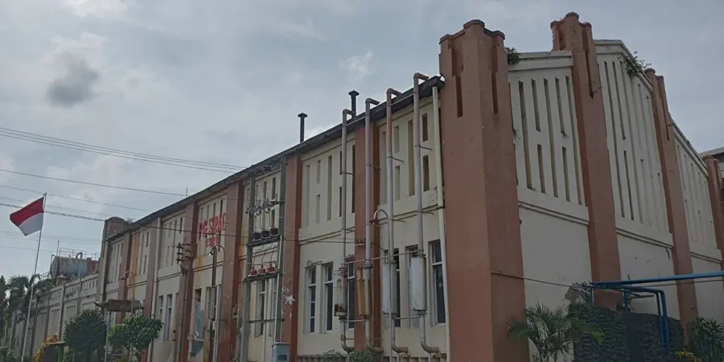
Pabrik Gula Sragi
Pabrik Gula Sragi adalah pabrik gula di Pekalongan, Jawa Tengah, yang didirikan pada tahun 1928, masih aktif beroperasi secara musiman (Mei–Agustus/Oktober), dan kini dikelola oleh PT Sinergi Gula Nusantara.
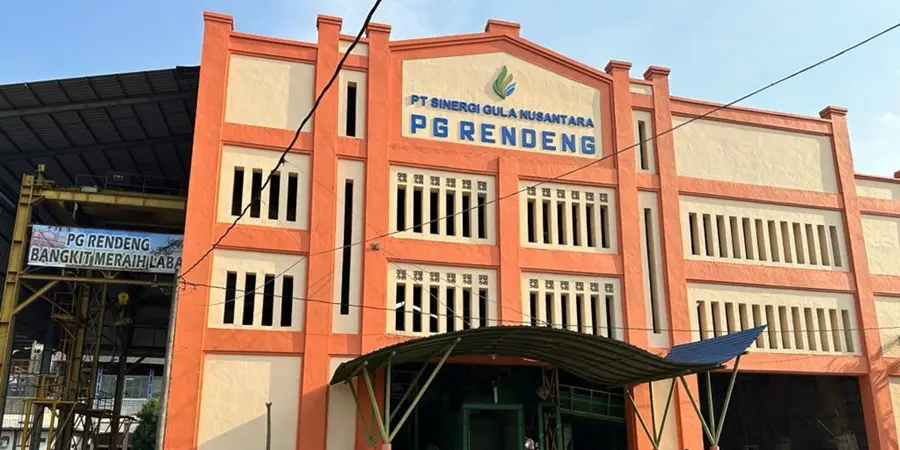
Pabrik Gula Rendeng
Pabrik Gula Rendeng merupakan pabrik gula yang didirikan pada 1840 oleh Mirandolie Voute & Co. dan kini dikelola PT Sinergi Gula Nusantara (SGN), dengan kapasitas produksi meningkat menjadi 4.000 TCD pada 2022.

Pabrik Gula Mojo
Pabrik Gula Mojo didirikan pada 1883 oleh NV Cultuur Maatschappij Lawoe dan kini dikelola SGN, dengan proses produksi menggunakan metode sulfitasi alkalis untuk menghasilkan gula kristal putih.
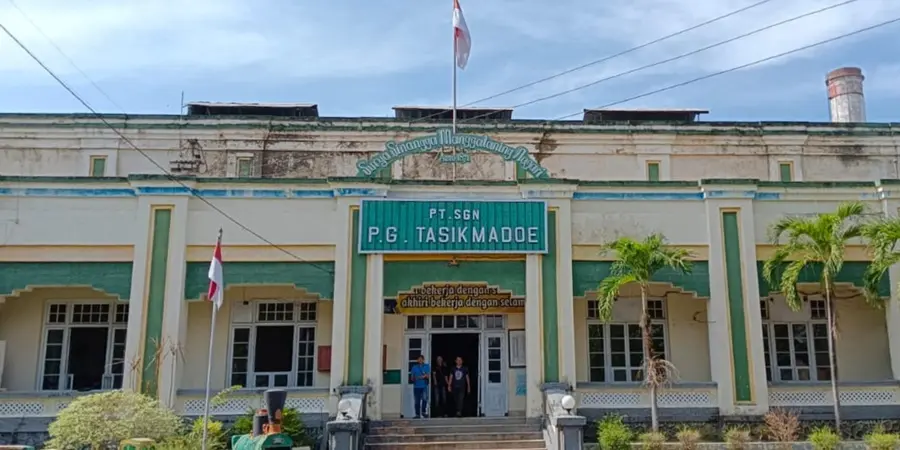
Pabrik Gula Tasikmadu
Pabrik Gula Tasikmadu didirikan pada 1871 oleh KGPAAM IV dan kini berada di bawah pengelolaan SGN, tetapi telah berhenti beroperasi sejak 2023.
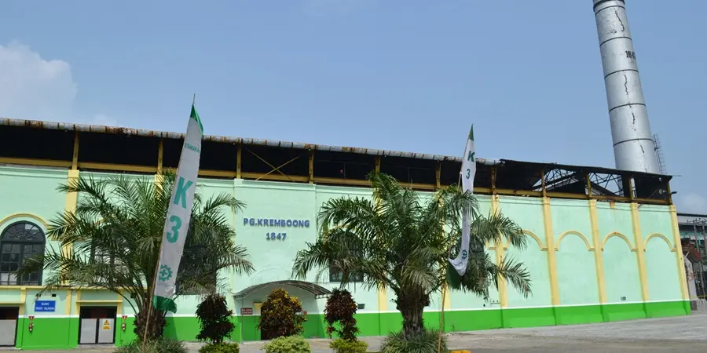
Pabrik Gula Kremboong
Pabrik Gula Kremboong didirikan pada 1847 oleh N.V. Cooy and Coster van Voor Hout dan kini dikelola SGN, dengan kapasitas produksi mencapai 2.500 TCD sejak 2012.
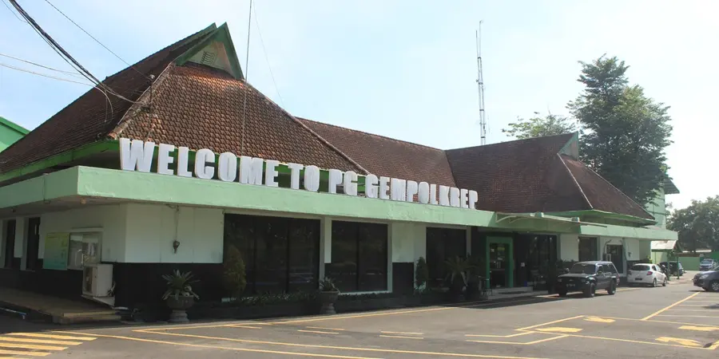
Pabrik Gula Gempolkrep
Pabrik Gula Gempolkrep didirikan pada 1849 oleh NV Cultuur Maatschappij Gempolkrep, dinasionalisasi pada 1958, dan kini dikelola SGN dengan kapasitas produksi 7.200 TCD.
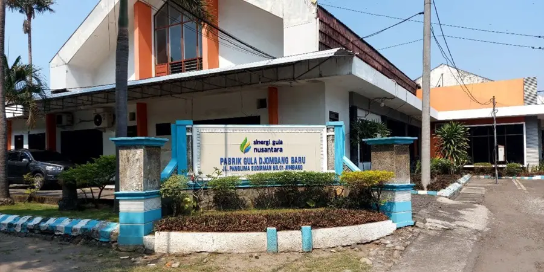
Pabrik Gula Djombang Baru
Pabrik Gula Djombang Baru didirikan pada 1895 oleh ANEMAET & Co. dan dinasionalisasi pada 1957, kemudian dikelola SGN dengan kapasitas produksi mencapai 3.000 TCD setelah revitalisasi pada 2014.

Pabrik Gula Tjoekir
Pabrik Gula Tjoekir didirikan pada 1884 oleh NV Kody en Coster van Voor Hout dan kini dikelola SGN, dengan kapasitas produksi mencapai 4.200 TCD setelah revitalisasi pada 2014.
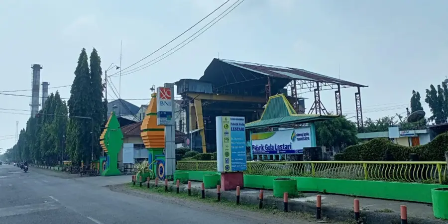
Pabrik Gula Lestari
Pabrik Gula Lestari didirikan pada 1909 oleh C.V. Cultuur Maatschappij Pandji Tanjungsari dan mengalami beberapa perubahan pengelolaan hingga kini berada di bawah SGN.
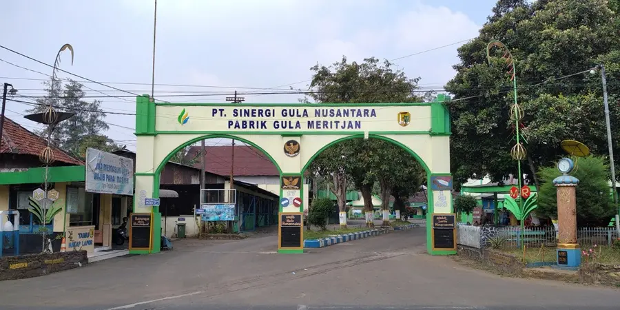
Pabrik Gula Meritjan
Pabrik Gula Meritjan didirikan pada 1903 oleh NILM, dinasionalisasi pada 9 Desember 1957, dan kini dikelola SGN dengan memperhatikan standar mutu serta lingkungan.
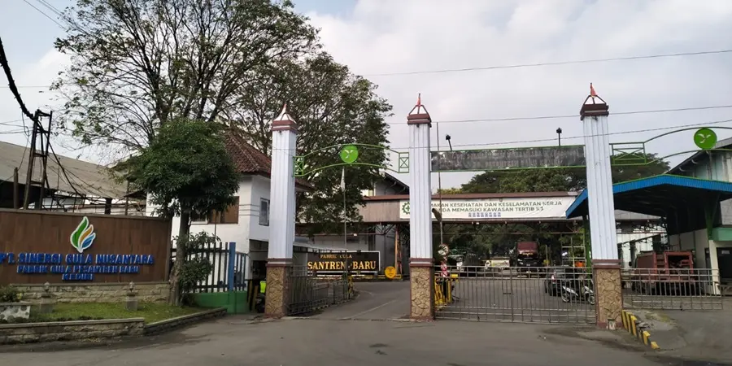
Pabrik Gula Pesantren Baru
Pabrik Gula Pesantren Baru dibangun untuk menggantikan PG Pesantren Lama yang berdiri pada 1849, mulai beroperasi pada 1978, dan kini dikelola SGN dengan kapasitas produksi 4.000 TCD.
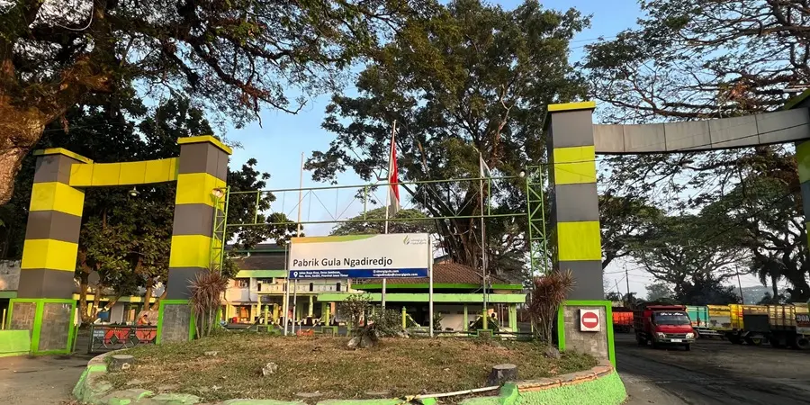
Pabrik Gula Ngadiredjo
Pabrik Gula Ngadiredjo didirikan pada 1912 oleh NV HVA di Desa Jambean, Kediri, dan kini dikelola SGN untuk mengolah tebu menjadi gula dan tetes.
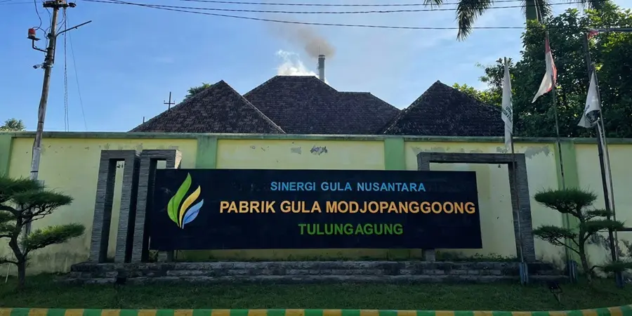
Pabrik Gula Modjopanggoong
Pabrik Gula Modjopanggoong didirikan sekitar 1852 oleh pihak swasta Belanda, dinasionalisasi pada 1957, dan kini dikelola SGN di Tulungagung.
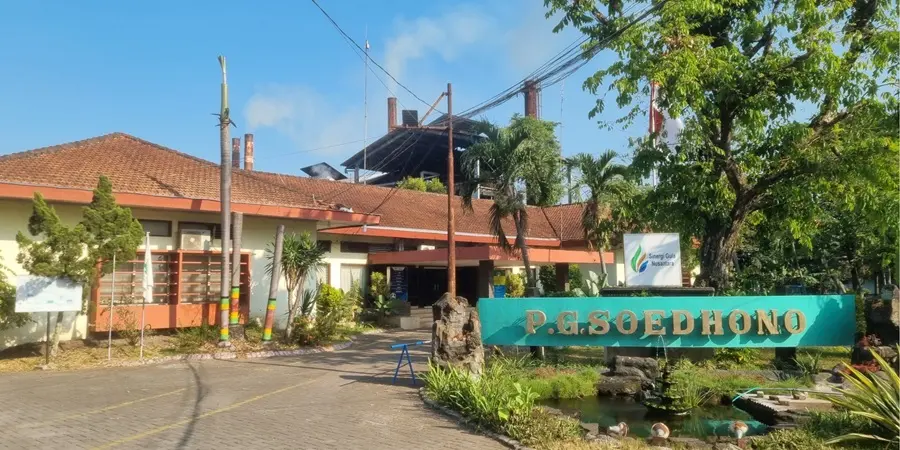
Pabrik Gula Soedhono
Pabrik Gula Soedhono didirikan pada 1888 oleh VVCM dan mengalami beberapa perubahan pengelolaan hingga kini dikelola SGN dengan kapasitas produksi 2.650 TCD.
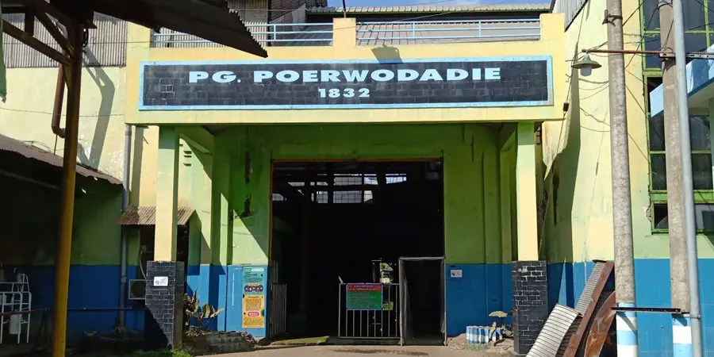
Pabrik Gula Poerwodadie
Pabrik Gula Poerwodadie didirikan pada 1832 oleh NHM dan mengalami sejumlah perubahan kepemilikan serta pengelolaan hingga kini berada di bawah SGN.
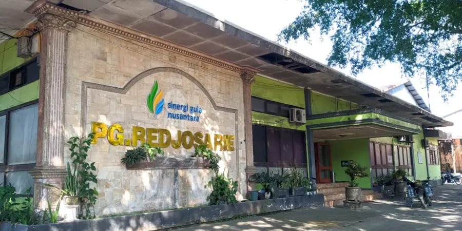
Pabrik Gula Redjosarie
Pabrik Gula Redjosarie didirikan pada 1890 oleh NILM, diambil alih pemerintah Indonesia pada 1957, dan kini dikelola SGN di Magetan.
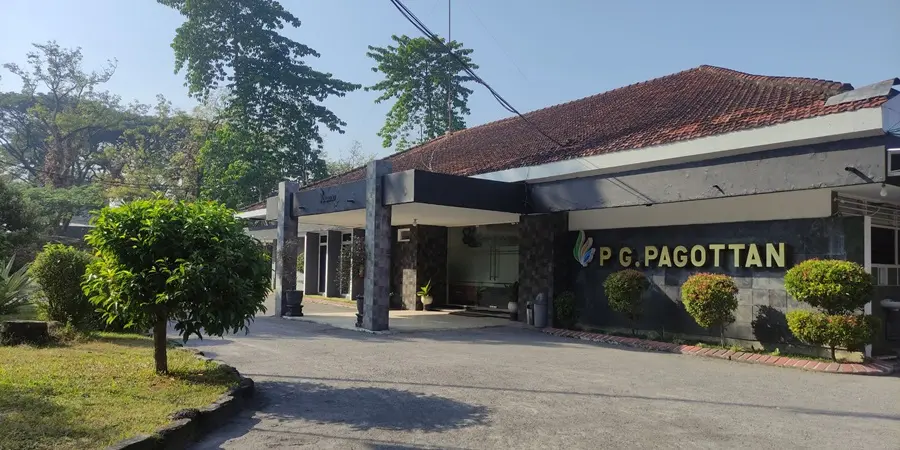
Pabrik Gula Pagottan
Pabrik Gula Pagottan didirikan pada 1884 oleh NV Cooy Coster van Voor Hout dan kini dikelola SGN dengan kapasitas produksi 3.000 TCD setelah revitalisasi.
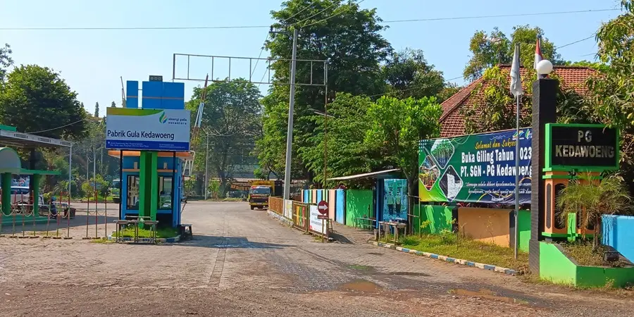
Pabrik Gula Kedawoeng
Pabrik Gula Kedawoeng didirikan pada 1842 dengan nama NV Kedawoeng dan mengalami perubahan status pengelolaan hingga kini berada di bawah SGN.
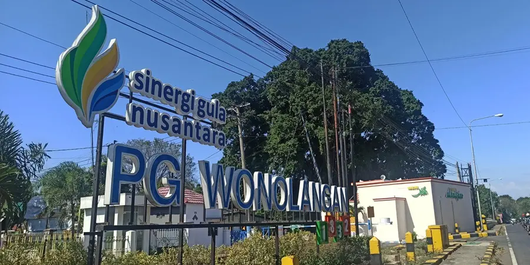
Pabrik Gula Wonolangan
Pabrik Gula Wonolangan didirikan pada 1832 oleh Charles Etty dari NHM, dinasionalisasi pada 1957, dan kini tetap beroperasi di bawah pengelolaan SGN.
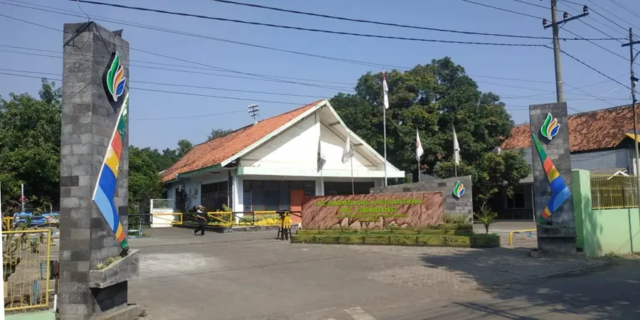
Pabrik Gula Gending
Pabrik Gula Gending didirikan pada 1830 oleh pemerintah kolonial dan dikelola Cultur Bank Maatschappij sebelum dinasionalisasi, hingga kini beroperasi di bawah SGN dengan kapasitas 1.550 TCD.
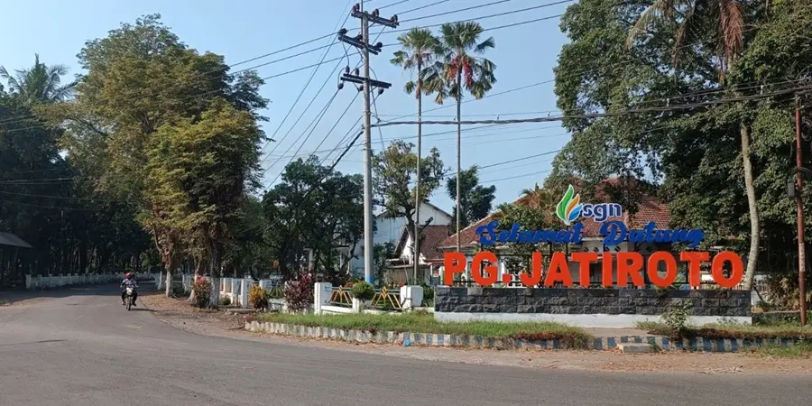
Pabrik Gula Djatiroto
Pabrik Gula Djatiroto mulai direncanakan pada 1884 oleh HVA dan dibangun pada 1915 di Kaliboto Lor sebagai pengembangan PG Ranupakis, serta kini beroperasi di Lumajang.
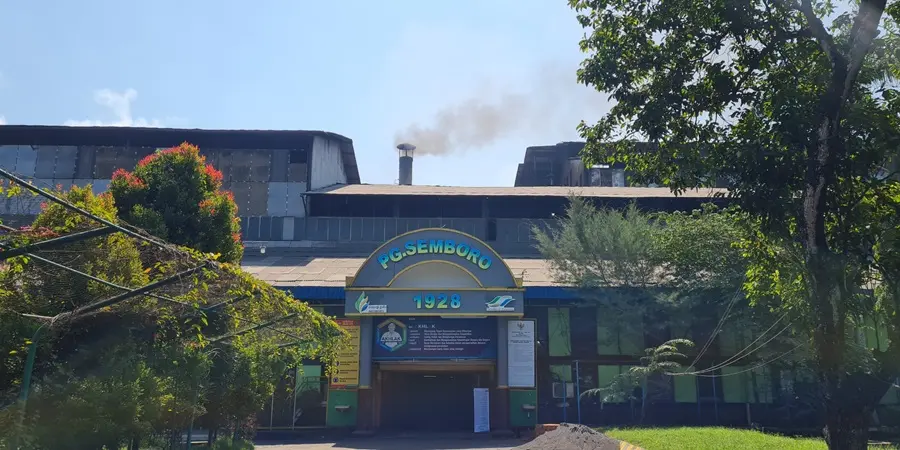
Pabrik Gula Semboro
Pabrik Gula Semboro didirikan oleh HVA pada 1921 dan mulai menggiling tebu pada 1928, kemudian mengalami beberapa kali perubahan pengelolaan hingga berada di bawah SGN.
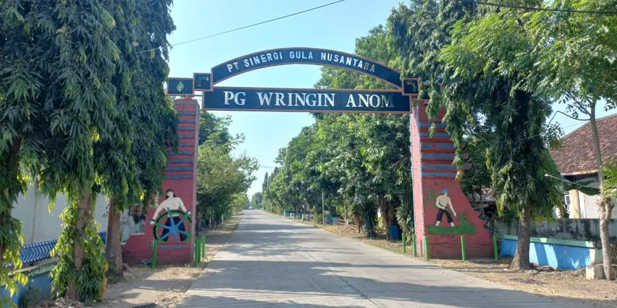
Pabrik Gula Wringinanom
Pabrik Gula Wringinanom didirikan pada 1881 oleh perusahaan asal Belanda, dinasionalisasi pada 1958, dan kini dikelola SGN dengan kapasitas produksi 1.200 TCD.
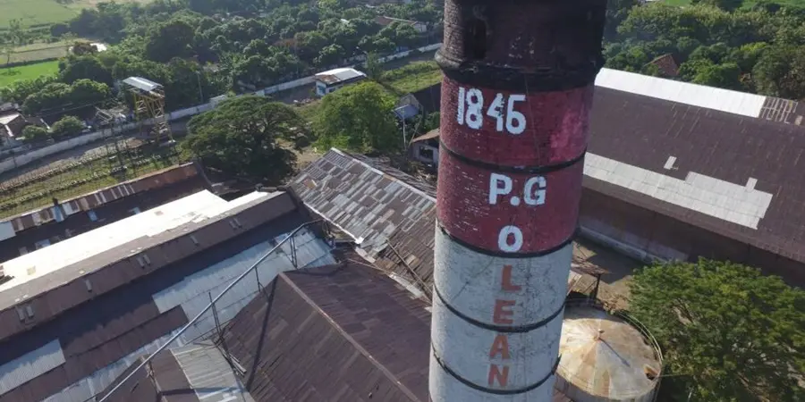
Pabrik Gula Olean
Pabrik Gula Olean dinasionalisasi pada 10 Desember 1957 dan mengalami beberapa kali perubahan pengelolaan sebelum akhirnya berhenti beroperasi pada 2020.

Pabrik Gula Pandjie
Pabrik Gula Pandjie didirikan pada 1884 di bawah N.V. Tiedeman & Van Kerchem dan mengalami perubahan pengelolaan setelah nasionalisasi hingga kini dikelola SGN.
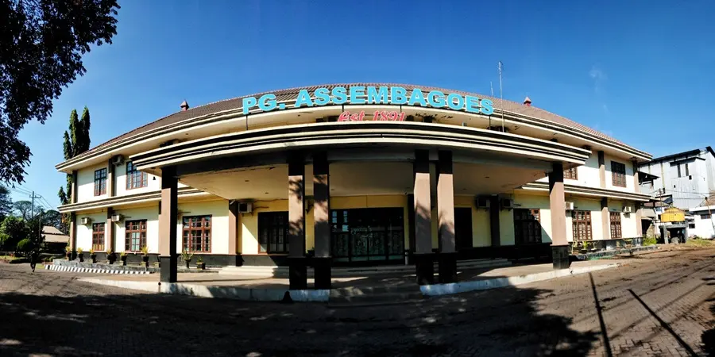
Pabrik Gula Assembagoes
Pabrik Gula Assembagoes mengalami peningkatan kapasitas produksi dari 1.200 menjadi 3.000 TCD, kemudian direvitalisasi pada 2018 hingga kapasitas terpasangnya mencapai 4.000 TCD.
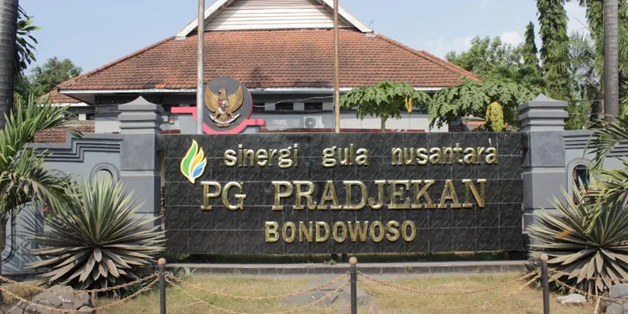
Pabrik Gula Pradjekan
Pabrik Gula Pradjekan didirikan pada 1883 oleh NV Cultuur Maatschappij Pradjekan–Tenggarang dengan investasi JW Bernie Anment & Co., dan kini dikelola SGN dengan kapasitas produksi 3.300 TCD.
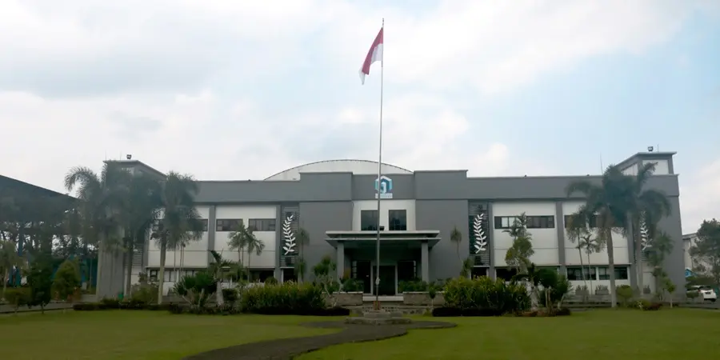
Pabrik Gula Glenmore
Pabrik Gula Glenmore dibangun mulai 2013 sebagai pabrik gula terpadu dengan kapasitas awal 6.000 ton tebu per hari, menjalani uji coba pada 2016, dan memulai produksi komersial pada 2019.
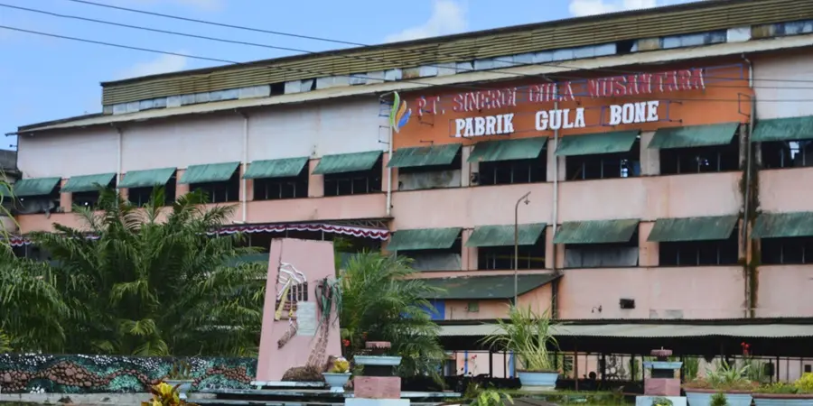
Pabrik Gula Bone
Pabrik Gula Bone merupakan salah satu pabrik gula pemerintah pertama di luar Jawa yang diresmikan pada 15 Oktober 1975 dan kini dikelola SGN dengan kapasitas produksi 2.400 TCD.
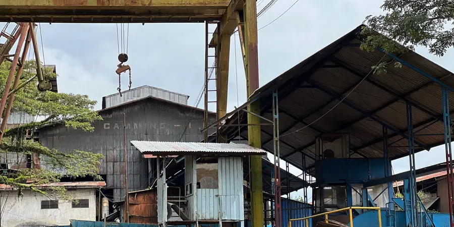
Pabrik Gula Camming
Pabrik Gula Camming dibangun mulai 1985 melalui kerja sama PTP XX dengan The Triveni E.W. India dan mulai menggiling tebu pada 1986, sebelum akhirnya dikelola SGN dengan kapasitas terpasang 3.000 TCD.
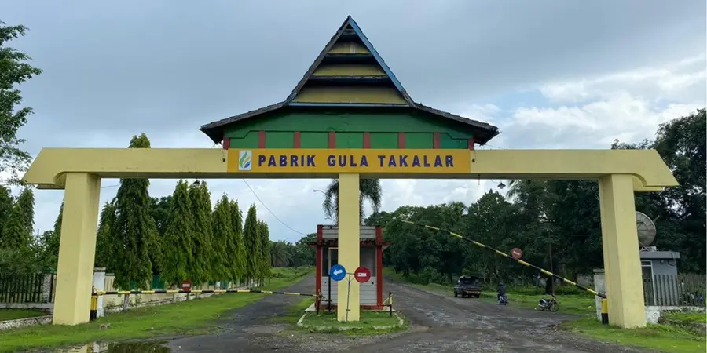
Pabrik Gula Takalar
Pabrik Gula Takalar dibangun pada 1982–1984 sebagai bagian dari program swasembada gula pemerintah dan diresmikan pada 23 Desember 1987, dengan musim giling terakhir yang disebutkan dalam paragraf berlangsung pada 2023.